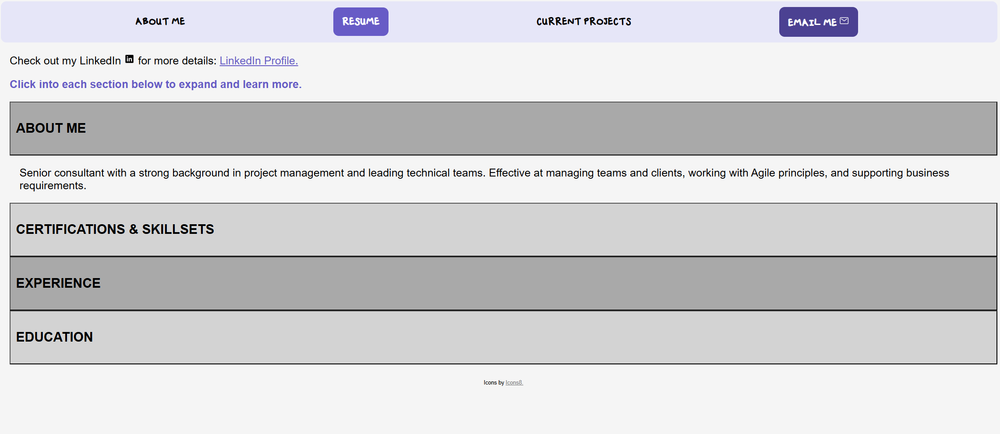
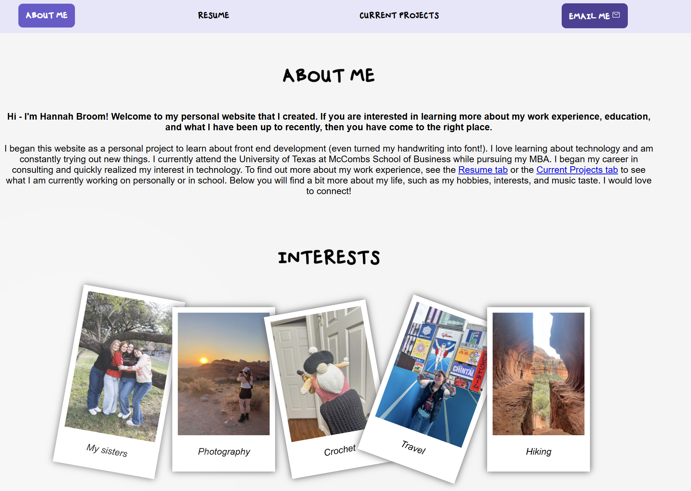

Case study
Making this website
I learn by doing. This site started as a blank file and became a practical way to understand front-end structure, responsive design, personal expression, and how quickly AI tools are changing the building process.
Click to see the design journey
The earlier site had the basic layout idea and personal elements I wanted: purple, my handwritten font, and sections for work, projects, and interests. What was harder was making it feel aesthetically polished and clearly communicating what I wanted people to take away.


Starting from blank
I started the first version in Fall 2025 with a very basic understanding of HTML and CSS. The goal was not to make the perfect portfolio. I wanted to see what I could build, understand how files connected to each other, and learn why small design decisions like spacing, hierarchy, and navigation matter.
That early version was rough, but it gave me a foundation. It helped me understand what I was asking for when I wanted a box moved, a heading resized, or a page to work differently on mobile than it did on desktop.
Revisiting it with newer AI tools
I came back to the site in June 2026 and was surprised by how different the building experience felt. Earlier, I remember going back and forth over small CSS issues like padding, alignment, and responsive spacing. This time, the models understood those fixes much faster and could help me make more intentional design choices.
The redesign also pushed me to think less like I was filling in a template and more like I was shaping how I wanted to be perceived. I wanted the site to feel modern and simple, but still have a little personality: purple accents, greyscale visuals, and my own handwriting used for the Hannah Broom wordmark.
What changed
Desktop and mobile are different products
Testing the site on smaller screens made it obvious that mobile could not just be the desktop site squeezed into a narrow column. Navigation, spacing, and section length all needed different decisions.
Design is part of the message
I realized I did not just want the site to list work. I wanted it to communicate taste, curiosity, and a design aesthetic that feels modern with a splash of personality.